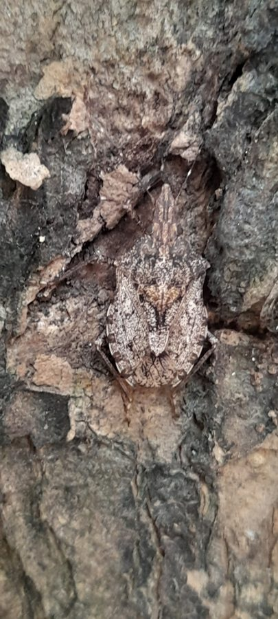

आरी-कंधा गंधी कीड़ाSaw-shouldered Stink Bug
Neohalys serricollis · Pentatomidae · INS-0218

- Scientific name वैज्ञानिक नाम
- Neohalys serricollis (Westwood, 1837)
- Family कुल
- Pentatomidae
- Hindi हिंदी
- आरी-कंधा गंधी कीड़ा
- Local names स्थानीय नाम
- saw shouldered stink bug, neohalys serricollis, saw shoulder bug, halys serricollis
- Status here यहाँ की स्थिति
- native
- Movement आवागमन
- Resident, here all year
- Known from कहाँ दर्ज
- Others have published records from the wider Awadh–Purvanchal plain, none yet from Basti–Ayodhya अवध–पूर्वांचल से दूसरों के प्रकाशित अभिलेख, बस्ती–अयोध्या से अभी नहीं
- IUCN IUCN
- not evaluated
- Review समीक्षा
- not yet reviewed
When to look कब देखें
Present all year. साल भर मौजूद।
Tell it apart from इनसे अलग पहचानें
आरी-कंधा गंधी कीड़ा / Saw-shouldered Stink Bug
Neohalys serricollis (Westwood, 1837) — Pentatomidae
आरी-कंधा गंधी कीड़ा — नीम, पीपल और बरगद के बड़े पुराने पेड़ों के तनों पर पाया जाने वाला एक भारी-भरकम, मटमैला भूरा ढाल जैसा कीड़ा। इसके कंधों के किनारों पर आरी जैसे नुकीले छोटे दांत बने होते हैं, जिससे इसका नाम पड़ा। इसका रंग पेड़ की सूखी छाल से बिल्कुल मिलता-जुलता होता है, जिससे यह तने पर बैठा हुआ आसानी से दिखाई नहीं देता।
Quick Identification त्वरित पहचान
| Feature | Description |
|---|---|
| Habit | Large, robust, elongate-ovate bark-dwelling shield bug 17–23 mm long (as Halys dentatus, Distant 1902) |
| Pronotum | Lateral margins conspicuously denticulate or saw-toothed with distinct teeth (Westwood 1837) |
| Coloration | Mottled grey-brown, ochraceous, coarsely and densely punctate with black (Distant 1902) |
| Head | Broad, elongate, lateral lobes (juga) rounded anteriorly and enclosing tylus (Distant 1902) |
| Rostrum | Very long, slender, four-segmented, extending backwards onto mid-abdomen |
| Legs | Stout, mottled brownish-ochraceous with dark punctation; tibiae sulcate |
Field tip: Look on the rough trunks of village neem, banyan, and peepal trees for large mottled grey-brown bugs with distinctly serrate, saw-toothed edges along the sides of the shoulders.
हिंदी — कैसे पहचानें: पेड़ की छाल जैसा कत्थई-मटमैला रंग, कंधों के दोनों तरफ आरी जैसे नुकीले दांत, और पेट तक पहुंचने वाली लंबी पतली सूंड।
Morphology शारीरिक संरचना
Measurements as given by Distant (1902), who treats serricollis under Halys dentatus:
| Measurement | Value | Source |
|---|---|---|
| Length | 17–23 mm | Distant (1902) |
| Breadth between the pronotal angles | 8–10 mm | Distant (1902) |
Exoskeleton and head: Body elongate-ovate, moderately depressed, sombre ochraceous-grey, variegated with dense coarse black punctures. Head longer than broad, parallel-sided in front of eyes; juga rounded at apex, cleft anteriorly or meeting in front of tylus; antennae five-segmented, dark brownish-ochraceous with pale incisures.
Thorax and wings: Pronotum hexagonal, convex, anterior lateral margins distinctly dilated and strongly serrate with 5–8 acute forward-pointing teeth, humeral angles prominent but rounded. Scutellum long, triangular, extending beyond middle of abdomen, base rugose with dark punctures, apex narrowed and rounded with pale margins. Hemelytra complete; corium mottled with black punctures; membrane bronzy-brown with reticulate longitudinal veins.
Venter and legs: Venter pale ochraceous with coarse black punctures laterally and a central longitudinal furrow receiving the elongate rostrum. Legs stout; femora mottled with fuscous spots; tibiae grooved externally; tarsi three-segmented.
हिंदी: इसका शरीर लंबा, चौड़ा और चपटा होता है। सिर आगे से हल्का गोल और खांचदार होता है। कंधों के किनारे आरी की तरह कटे होते हैं। पेट के नीचे एक खांचा होता है जिसमें इसकी लंबी सूंड रखी रहती है।
Behaviour & Ecology व्यवहार एवं पारिस्थितिकी
Neohalys serricollis is an arboreal specialist intimately adapted to life on the trunks of rough-barked trees. The mottled grey-brown dorsal pattern provides exceptional crypsis against lichen-encrusted and fissured tree bark, rendering the resting insect virtually invisible to passing predators.
Adults feed by inserting their extraordinarily long stylets through bark fissures to tap phloem sap flowing in the subcortical cambium. When approached, the bug rotates slowly around the tree trunk to keep the woody bulk between itself and the observer, a classic displacement behaviour seen in bark bugs. If pressed, it flattens itself into bark crevices or drops downward before taking to lumbering flight. Defensive scent secretions released from metathoracic glands are pungent, oily, and persistent, effectively repelling foraging tree ants and geckoes.
हिंदी: यह कीड़ा पेड़ की खुरदुरी छाल से इतना मिलता-जुलता है कि इसे देख पाना बहुत कठिन होता है। खतरा भांपकर यह तने के पीछे घूम जाता है ताकि नजर से बच सके। इसकी गंध ग्रंथियों से निकलने वाला तेल चींटियों को दूर रखता है।
Life Cycle / Phenology जीवन चक्र एवं ऋतुचक्र
| Period | Phenological Event |
|---|---|
| March–April | Overwintering adults emerge from deep bark crevices and commence feeding on sap flows |
| May–June | Mating takes place on tree trunks; females glue barrel-shaped egg batches onto bark |
| July–September | Nymphs develop through five instars on host trunks and lower shaded scaffold branches |
| October–November | New adults feed vigorously to accumulate fat bodies before winter dormancy |
Nymphs possess flattened, mottled bodies with serrate pronotal margins that mimic flakes of peeling tree bark from their third instar onwards.
हिंदी: बसंत में धूप तेज होने पर यह छाल से बाहर आते हैं। मादा छाल पर अंडों के गुच्छे चिपकाती है। बरसात में इसके बच्चे पेड़ों पर पलते हैं और जाड़े के मौसम में छाल की दरारों में छिपकर सुस्त हो जाते हैं।
Host Plants or Prey पोषक पौधे अथवा शिकार
- Shade and Village Trees: Sucks sap from trunk bark of Neem and Peepal.
- Sacred and Riverine Figs: Inhabits trunks of Banyan and other wild ficus trees.
- Forest Timber Trees: Occasionally recorded on trunks of Arjun Tree and shisham.
हिंदी: यह नीम, पीपल, बरगद और अर्जुन के बड़े पेड़ों की छाल के अंदर सूंड डालकर रस चूसता है।
Predators / Natural Enemies प्राकृतिक शत्रु
- Arboreal Lizards: Garden lizards (Calotes versicolor) stalk adults on sunny tree trunks.
- Predatory Bugs: Assassin bugs (Acanthaspis) hunt nymphs within deep bark crevices.
- Egg Parasitoids: Scelionid wasps (Trissolcus) parasitize egg clusters glued to tree bark.
हिंदी: पेड़ों पर रहने वाले गिरगिट और शिकारी कीड़े इसका शिकार करते हैं। छोटी परजीवी ततैया इसके अंडों में परजीवी बनकर इन्हें नष्ट करती हैं।
Agricultural / Human Relevance कृषि एवं मानवीय उपयोगिता
Ecological Status:
- Non-pest status. Does not damage field crops, cereals, or commercial vegetable plantings; restricted almost entirely to woody trunks of mature perennial trees.
- Bark ecosystem component. Plays a natural role in canopy invertebrate food webs, converting tree carbohydrates into biomass for higher predators.
- Indicator of tree maturity. Indicates the presence of ancient, undisturbed shade trees and village groves with deep bark microhabitats.
Today. Frequently found on heritage trees in village groves, temple compounds, and canal avenues across eastern Uttar Pradesh.
हिंदी: यह फसलों या सब्जियों को कोई नुकसान नहीं पहुंचाता और केवल बड़े पुराने पेड़ों की छाल पर रहता है। यह ग्रामीण पेड़ों के प्राकृतिक पर्यावरण का एक उपयोगी हिस्सा है।
Expected Locally स्थानीय संभावना एवं उपस्थिति
Not a field record. Written from published accounts for eastern Uttar Pradesh. No confirmed local sighting yet — if you have seen it, that is what the atlas needs.
अभी तक स्थानीय पुष्टि नहीं। यह विवरण प्रकाशित स्रोतों से है, किसी अवलोकन से नहीं।
Expected in eastern Uttar Pradesh across agricultural crops, orchard groves, riverine scrub, and rural vegetation across Basti, Sant Kabir Nagar, and Ayodhya. GBIF holds published records from the wider Awadh–Purvanchal plain, none yet from Basti–Ayodhya. A first local record would be a dated photograph of the serrate pronotal margins, mottled bark-like body, and head structure, submitted with locality details through the project's About page.
Distribution भौगोलिक वितरण
Global range: Native to South Asia, distributed across India, Pakistan, Nepal, and Sri Lanka.
In India: Recorded from northern India, the Gangetic plain, Central India, and parts of the Deccan (Distant 1902).
In Uttar Pradesh: Distributed across the plains wherever mature deciduous and shade trees are preserved.
In Basti district / eastern UP: Expected on ancient peepal, banyan, and neem trees in village groves.
हिंदी: भारत के गंगा के मैदानी इलाकों, मध्य भारत और नेपाल के पुराने पेड़ों वाले इलाकों में यह कीड़ा पाया जाता है।
Research Questions शोध प्रश्न
- What is the preference hierarchy of Neohalys serricollis among indigenous ficus and neem tree species? / पीपल, बरगद और नीम में से यह कीड़ा किस पेड़ के तने को सबसे ज्यादा पसंद करता है?
- How does bark texture influence the survival rate of overwintering adult aggregations in Awadh? / खुरदुरी छाल की दरारें जाड़े में इस कीड़े को ठंड से बचाने में कितनी मदद करती हैं?
- What is the acoustic or vibrational signal used by males during courtship on tree trunks? — Record substrate-borne vibrations using laser vibrometry on host bark.
- Does the chemical composition of metathoracic secretions differ between Neohalys and Erthesina? — Compare volatile profiles using gas chromatography-mass spectrometry.
- How does tree trunk diameter correlate with the density of egg batches laid on bark? / क्या तने की मोटाई और अंडों की संख्या के बीच कोई सीधा संबंध है?
Similar Species समान प्रजातियाँ
| Species | How to tell apart | हिंदी |
|---|---|---|
| Pointed Stink Bug (Erthesina acuminata) | Pronotal margins finely crenulate, not saw-toothed; head sharply pointed | कंधे आरी जैसे नहीं, सिर आगे से बहुत नुकीला |
| Yellow-spotted Stink Bug (Erthesina fullo) | Yellow median stripe on head and pronotum; shoulders rounded, unspined | पीठ पर पीली रेखा, कंधे गोल और बिना कांटे के |
| Green Shield Bug (Plautia crossota) | Bright grass-green; much smaller; smooth rounded pronotal margins | चमकीला हरा शरीर, बहुत छोटा, चिकने कंधे |
Field rule: Large grey-brown bark-dwelling shield bug with distinctly saw-toothed, serrate lateral margins on the pronotum and an elongate rostrum identifies Neohalys serricollis.
Taxonomy & Classification वर्गिकी एवं वर्गीकरण
Original description. Described by John Obadiah Westwood in 1837 as Halys serricollis in A Catalogue of Hemiptera in the Collection of the Rev. F.W. Hope, part 1, p. 23. Distant (1902) listed serricollis as a synonym of Halys dentatus; it is now placed in Neohalys.
Subspecies. Monotypic; no subspecies are currently recognized across its South Asian range.
Family and order placement. Belongs to the true bug family Pentatomidae, subfamily Pentatominae, tribe Halyini, in the order Hemiptera.
Phylogenetic notes. Separated from Halys and Erthesina by the prominent serrate pronotal teeth, parallel-sided head, and rounded juga enclosing the tylus.
IUCN status rationale. Not evaluated in the master expansion list; it is a widespread native true bug with secure continental populations.
हिंदी: जॉन ओबाडिया वेस्टवुड ने 1837 में इसका वैज्ञानिक विवरण 'हेलिस सेरिकोलिस' नाम से दिया था। बाद में इसे 'नियोहेलिस' वंश में रखा गया। यह पेंटाटोमिडी कुल का सदस्य है।
Photo Gallery छायाचित्र दीर्घा
No photos yet — add field photos to media/species/saw_shouldered_stink_bug/ and run node scripts/sync_photos.js.
Photos needed आवश्यक फोटो
- [ ] Adult camouflaged against the rough bark of a neem or peepal trunk (पेड़ की छाल पर छिपा वयस्क कीड़ा)
- [ ] Close-up showing the saw-toothed serrate margin of the pronotum (कंधे के आरी जैसे दांतों का विस्तृत चित्र)
- [ ] Dorsal habitus view showing mottled grey-brown punctate pattern (पीठ की खुरदुरी बनावट का ऊपरी दृश्य)
References संदर्भ सूची
- Westwood, J.O. (1837). A Catalogue of Hemiptera in the Collection of the Rev. F.W. Hope, part 1, p. 23. J.C. Bridgewater, London.
- Distant, W.L. (1902). The Fauna of British India, including Ceylon and Burma: Rhynchota, vol. 1, p. 136. Taylor and Francis, London.
- Dohrn, A. (1859). Catalogus Hemipterorum, p. 11. Herrcke & Lebeling, Stettin.
- Kirkaldy, G.W. (1909). Catalogue of the Hemiptera (Heteroptera), vol. 1: Cimicidae, p. 195. Felix L. Dames, Berlin.
- Salini, S. & Viraktamath, C.A. (2015). Genera of Pentatomidae (Hemiptera: Pentatomoidea) from south India – an illustrated key to genera and checklist of species. Zootaxa, 3924(1), pp. 1–76. doi:10.11646/zootaxa.3924.1.1
- GBIF Occurrence Data — Neohalys serricollis (Westwood, 1837), India (2025).
Source file: species/fauna/insects/saw_shouldered_stink_bug.md